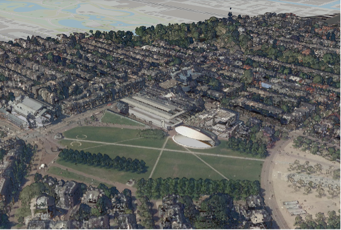

LiDAR Museumplein, Amsterdam
What is LiDAR?
LiDAR, which stands for Light Detection and Ranging, is a remote sensing method used to examine the surface of the Earth. LiDAR systems emit laser pulses and measure the time it takes for these pulses to return after hitting an object. This data is used to create highly accurate, three-dimensional information about the shape of the Earth and its surface characteristics.
Visualization of Museumplein, Amsterdam
The image above is a LiDAR-based 3D visualization of Museumplein, Amsterdam. This visualization highlights the detailed surface characteristics of the area, including buildings, trees, and the terrain. Notable features such as the Concertgebouw, a renowned concert hall in Amsterdam, are clearly visible in the LiDAR model.
Steps Taken to Create the 3D Scene
In this project, I utilized various geospatial tools and data to create a 3D visualization of LiDAR data for Museumplein, Amsterdam. Below are the detailed steps I followed:
1. Downloading the Data
I downloaded the necessary LiDAR data from the GeoTiles website. The specific files downloaded included:
- 0.5m Digital Surface Model (DSM)
- 0.5m Digital Terrain Model (DTM)
- LAZ file
- RGB imagery
These files provided comprehensive data for creating an accurate 3D model.
2. Setting Up the Project
I created a new project in ArcGIS Pro and organized the downloaded data into the project folder. This step included:
- Creating a new project folder
- Moving the DSM, DTM, RGB, and LAZ files into this folder
3. Converting LAZ to LAS
Since ArcGIS Pro does not support LAZ files directly, I converted the LAZ file to LAS format:
- Used the "Convert LAS" tool in ArcGIS Pro
- Selected the LAZ file as the input and set the output folder to a new "LAS" folder within the project
- Ensured the coordinate system was set to RD_New
4. Importing and Visualizing Data
With the data converted and organized, I imported the files into ArcGIS Pro:
- Added the DSM, DTM, RGB, and LAS files to the project
- Configured the display settings to visualize the LAS data effectively
- Explored different symbology options for the LAS data, including elevation and classification views
5. Creating a Hillshade and 3D View
I created a hillshade layer to enhance the visualization:
- Used the Raster Functions in the Imagery Ribbon to create a hillshade from the DSM
- Adjusted the symbology and transparency to combine the hillshade with the DSM
6. Exporting and Sharing the Scene
Finally, I exported the 3D scene and prepared it for sharing online:
- Converted the project to a local 3D scene in ArcGIS Pro
- Configured the scene properties, including metadata such as title, tags, and description
- Saved the project and exported the scene to be embedded on the website
This process involved a combination of data management, conversion, and visualization techniques using ArcGIS Pro. The final 3D scene provides an interactive view of Museumplein, Amsterdam, showcasing the capabilities of LiDAR data in urban analysis and visualization.